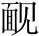

这一篇，是从日文的《新兴文学全集》第二十四卷里冈泽秀虎的译本重译的，并非全卷之中，这算最好，不过因为一是篇幅较短，译起来不费许多时光，二是大家可以看看在俄国所谓“同路人”者，做的是怎样的作品。
这所叙的是欧洲大战时事，但发表大约是俄国十月革命以后了。原译者另外写有一段简明的解释[851]，现在也都译在这下面——
“雅各武莱夫（Alexandr Iakovlev）是在苏维埃文坛上，被称为‘同路人’的群中的一人。他之所以是‘同路人’，则译在这里的《农夫》，说得比什么都明白。
“从毕业于彼得堡大学这一端说，他是智识分子，但他的本质，却纯是农民底，宗教底。他是禀有天分的诚实的作家。他的艺术的基调，是博爱和良心。他的作品中的农民，和毕力涅克作品中的农民的区别之处，是在那宗教底精神，直到了教会崇拜。他认农民为人类正义和良心的保持者，而且以为惟有农民，是真将全世界联结于友爱的精神的。将这见解，加以具体化者，是《农夫》。这里叙述着‘人类的良心’的胜利。但要附加一句，就是他还有中篇《十月》，是显示着较前进的观念形态的。”
日本的《世界社会主义文学丛书》第四篇，便是这《十月》，曾经翻了一观，所写的游移和后悔，没有一个彻底的革命者在内，用中国现在时行的批评式眼睛来看，还是不对的。至于这一篇《农夫》，那自然更甚，不但没有革命气，而且还带着十足的宗教气，托尔斯泰气，连用我那种落伍眼看去也很以苏维埃政权之下，竟还会容留这样的作者为奇。但我们由这短短的一篇，也可以领悟苏联所以要排斥人道主义之故，因为如此厚道，是无论在革命，在反革命，总要失败无疑，别人并不如此厚道，肯当你熟睡时，就不奉赠一枪刺。所以“非人道主义”的高唱起来，正是必然之势。但这“非人道主义”，是也如大炮一样，大家都会用的，今年上半年“革命文学”的创造社和“遵命文学”的新月社[852]，都向“浅薄的人道主义”进攻，即明明白白证明着这事的真实。再想一想，是颇有趣味的。
A.Lunacharsky[853]说过大略如此的话：你们要做革命文学，须先在革命的血管里流两年；但也有例外，如“绥拉比翁的兄弟们”，就虽然流过了，却仍然显着白痴的微笑。这“绥拉比翁的兄弟们”，是十月革命后墨斯科的文学者团体的名目，作者正是其中的主要的一人。试看他所写的毕理契珂夫[854]，善良，简单，坚执，厚重，蠢笨，然而诚实，像一匹象，或一个熊，令人生气，而无可奈何。确也无怪Lunacharsky要看得顶上冒火。但我想，要“克服”这一类，也只要克服者一样诚实，也如象，也如熊，这就够了。倘只满口“战略”“战略”，弄些狐狸似的小狡狯，那却不行，因为文艺究竟不同政治，小政客手腕是无用的。
曾经有旁观者，说郁达夫喜欢在译文尾巴上骂人，我这回似乎也犯了这病，又开罪于“革命文学”家了。但不要误解，中国并无要什么“锐利化”的什么家，报章上有种种启事为证，还有律师保镳[855]，大家都是“忠实同志”，研究“新文艺”的。乖哉乖哉，下半年一律“遵命文学”了，而中国之所以不行，乃只因鲁迅之“老而不死”[856]云。
十月二十七日写讫。
注 释
[850] 本篇连同《农夫》的译文，最初发表于1928年11月《大众文艺》月刊第一卷第三期。后收入《近代世界短篇小说集》之二《在沙漠上及其他》时，删去了首二段及末段。
[851] 这段解释，见于冈泽秀虎的《关于三个作家》，原载《新兴文学》第五号（1928年8月，平凡社与《新兴文学全集》第二十四卷相配发行）。
[852] 新月社 以留学英美的知识分子为核心的文学和政治性团体，1923年成立于北京，取名于泰戈尔的诗集《新月集》。主要成员有胡适、徐志摩、陈源、梁实秋等。曾以诗社名义于1926年夏借《晨报副刊》出版《诗刊》（周刊）十一期；1927年其成员南下，在上海开办新月书店，出版《新月》月刊，宣传“英国式民主”。这里所说他们和创造社“都向‘浅薄的人道主义’进攻”，如创造社冯乃超在《艺术与社会生活》一文（载1928年1月《文化批判》月刊第一号）中，称托尔斯泰是“人道主义者”，“

颜做世界最卑污的事——宗教的说教人”。新月社梁实秋在《文学与革命》一文（载1928年6月《新月》月刊第一卷第四期）中说：“近来的伤感的革命主义者，以及浅薄的人道主义者，对于大多数的民众有无限制的同情。这无限制的同情往往压倒了一切的对于文明应有的考虑。”[853] Lunacharsky 卢那察尔斯基。
[854] 毕理契珂夫 《农夫》的主角，一位农民出身的俄罗斯士兵。
[855] 律师保镳 指1928年6月15日上海刘世芳律师代表创造社及创造社出版部在上海《新闻报》上刊出启事一事。其中说：“本社纯系新文艺的集合，本出版部亦纯系发行文艺书报的机关；与任何政治团体从未发生任何关系……在此青天白日旗下，文艺团体当无触法之虞，此吾人从事文艺事业之同志所极端相信者……此后如有诬毁本社及本出版部者，决依法起诉，以受法律之正当保障……此后如有毁坏该社名誉者，本律师当依法尽保障之责。”
[856] “老而不死” 语出《论语·宪问》：“老而不死，是为贼。”杜荃（郭沫若）在《创造月刊》二卷一期（1928年8月）所载《文艺战线上的封建余孽》一文中，曾说鲁迅主张“杀尽一切可怕的青年”，“于是乎而‘老头子’不死了”。